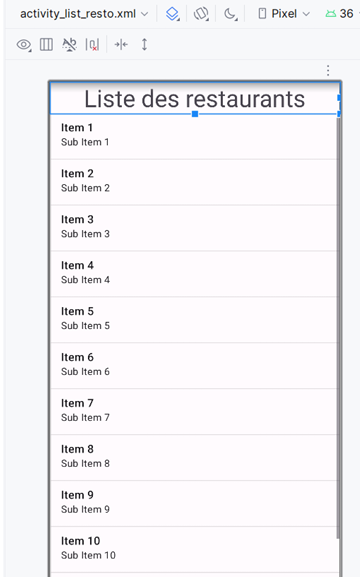
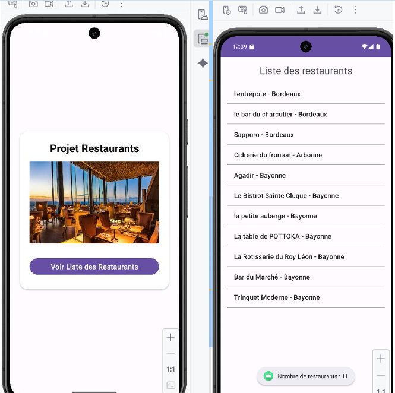
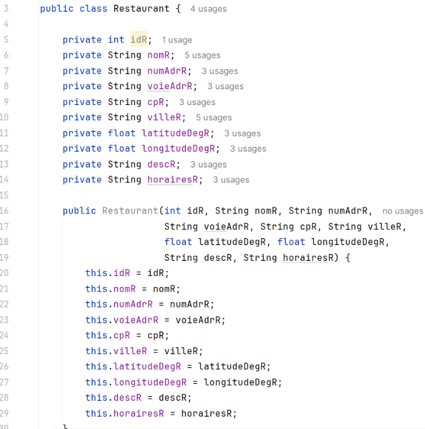
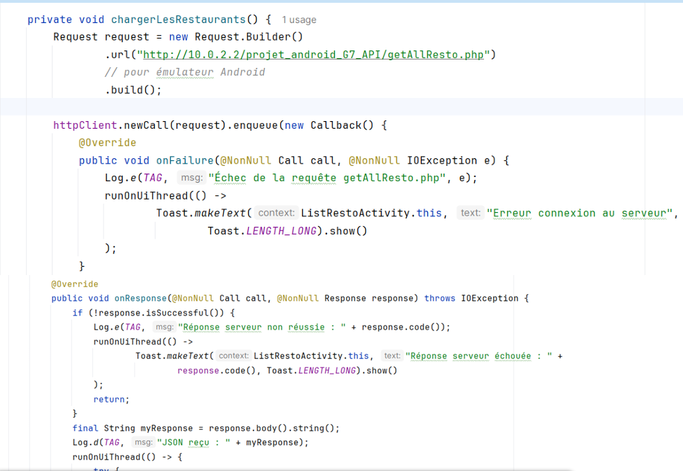
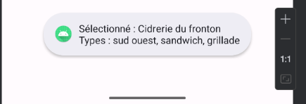

Itération 1 – Projet Android
« En tant qu'utilisateur, je souhaite pouvoir consulter la liste des restaurants (nom et ville) afin de pouvoir en sélectionner un ensuite. » Cette première itération avait pour but de créer une application Android permettant l'affichage d'une liste des restaurants avec leurs noms et ville associé.
1. Configuration du projet Android
- Création d'un nouveau projet dans Android Studio
- Configuration avec le langage Java
- Mise en place de l'activité principale
2. Interface utilisateur
- Création d'un layout pour afficher la liste des restaurants 
- Affichage pour chaque restaurant :
- Le nom du restaurant
- La ville

3. Logique métier
- Création d'une classe Restaurant avec les attributs : nom et ville 
- Création d'un layout personnalisé pour l'affichage de la liste (voir capture plus haut ou CR)
- Initialisation d'une liste de restaurants avec des données de la bdd
4. Fonctionnalités
- Affichage d'une liste scrollable de restaurants via l'API 
- Sélection possible d'un restaurant (préparation pour les prochaines itérations) 
L'API est disponible sur GitLab : Lien GitLab. Pour l'utiliser, faire un git clone dans le dossier www de Wamp.

Résultats
L'objectif de cette itération a été atteint avec succès. L'application affiche correctement une liste de restaurants avec leurs noms et villes. L'interface est intuitive et respecte les normes de design Android. Le code est structuré et prêt pour les évolutions des prochaines itérations.
- Liste de restaurants affichée correctement avec le nom et la ville + affichage du type de cuisine dans le Toast